CMH DHAKA · RADIOLOGY & IMAGING
Manage the system
with confidence.
A practical guide to CMH Smart Serial, with detailed instructions for administrators and Settings.
01 / GETTING STARTED
Sign in and find Settings
- Open your hospital’s CMH Smart Serial address and enter your assigned username and password.
- If asked to change a temporary password, enter that password, choose a different password of at least 10 characters, and confirm it. Select Change password and continue.
- Select Settings in the left navigation. The available tabs depend on your role and permissions.
- Open this guide using User manual beside Sign out. It opens in a separate tab, leaving your current work in place.
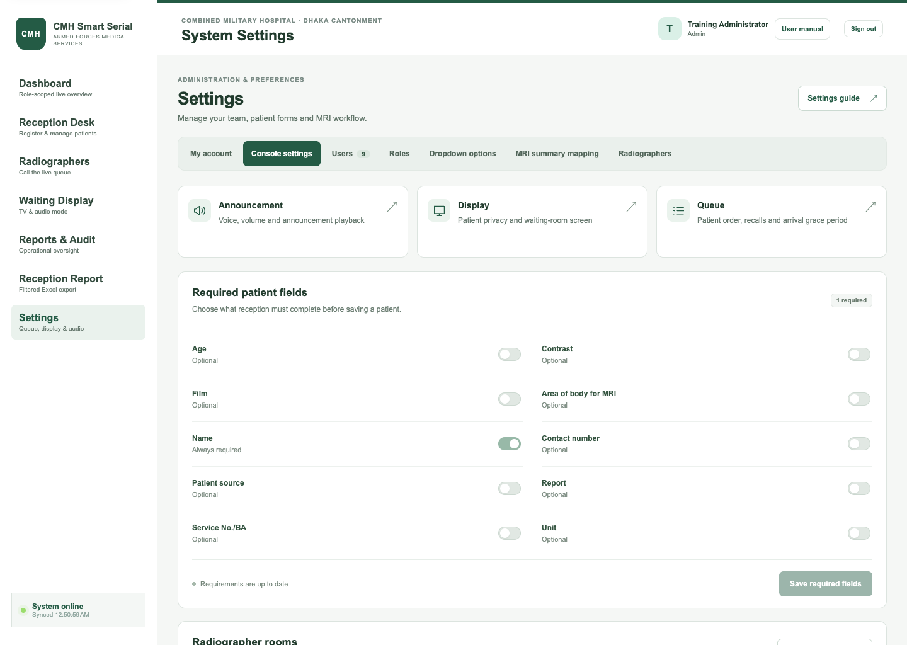
Read the dashboard
The dashboard overview fits on one screen. Use Patient filter to choose All patients, VIP only or Non-VIP only. The filter updates the totals, charts and patient lists opened from the totals.
- Completed vs Waiting: a pie chart comparing only those two states. Percentages use completed + waiting as the denominator; patients currently called or in service are excluded.
- Patients by status: a bar chart of Waiting, Called, In service, Completed and Other. Other includes skipped, cancelled and no-show patients.
Select a total to open the corresponding patient details. Select Back to dashboard to return to the one-screen overview. An empty filter shows zero counts and a neutral pie.
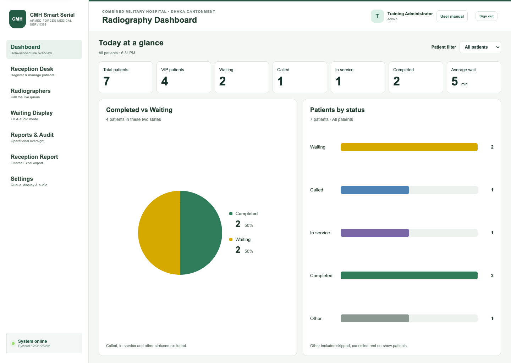
Use Find user and the Status filter to locate an account. Badges show active or disabled accounts, your own account, and required password changes. Settings dialogs provide Cancel and show Saving while a request is in progress.
02 / ADMINISTRATION
Create and manage users
Open Settings → Users. An administrator can create accounts, assign roles, reset passwords, disable accounts and delete accounts. A radiographer’s login must be linked to the correct radiographer directory entry.
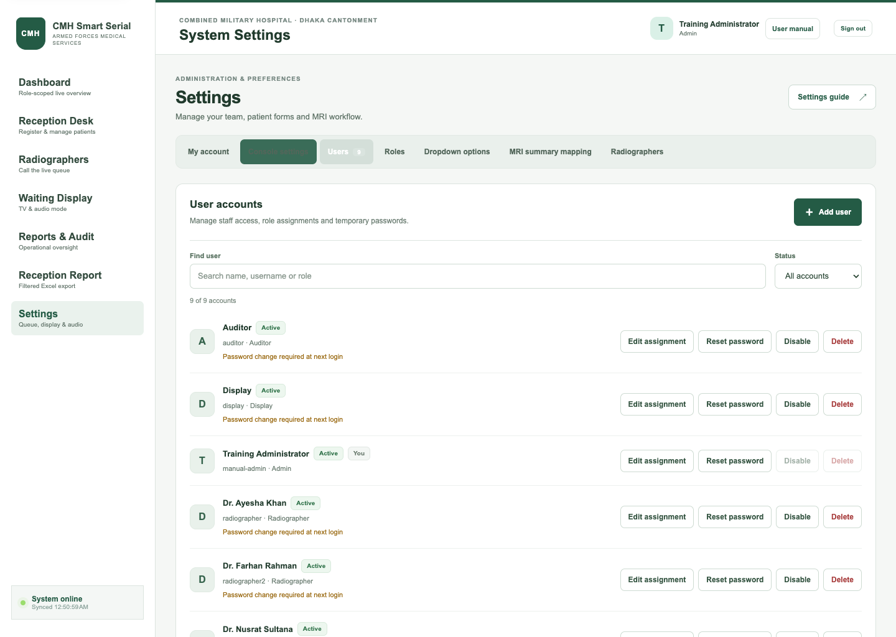
Add an account
- Select Add user.
- Enter a unique Username and the person’s Full name.
- Enter a temporary Password of at least 10 characters.
- Select the Role. For a role with the radiographer data scope, also select the responsible Radiographer.
- Select Create user. Give the username and temporary password directly to that staff member.
- The person must choose a new password at first login before accessing the application.
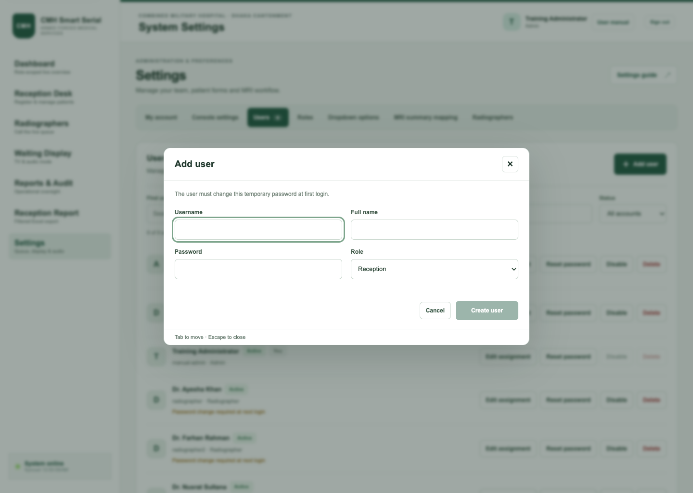
Change a role or radiographer assignment
Find the account in Users, select Edit assignment, choose the role and (where required) radiographer, then select Save assignment. Verify that the staff member sees the expected workspace.
Reset a forgotten password
- Find the correct account and select Reset password.
- Enter a temporary password of at least 10 characters, then select Reset password.
- Existing sessions are closed. The person signs in with the temporary password and must replace it immediately.
This also applies when resetting another administrator’s password. Resetting your own account signs you out so you can sign in again with the temporary password.
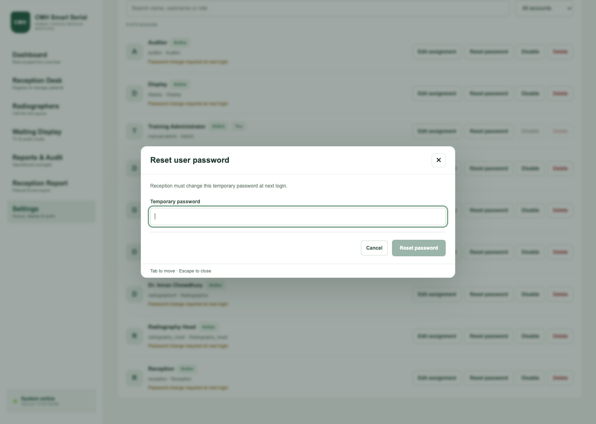
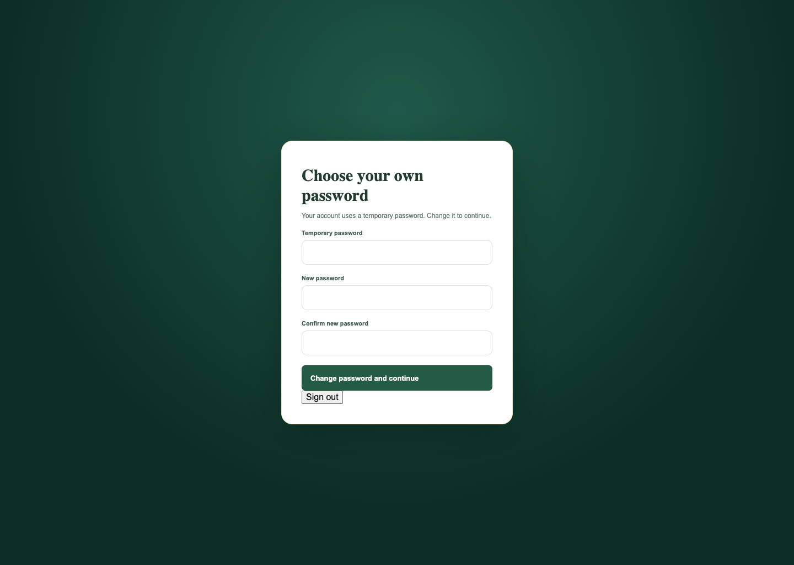
Disable or delete an account
Use Disable to stop an account from signing in, or Enable to restore it. Use Delete when the account should be removed and confirm the prompt. You cannot disable or delete your own signed-in account. Disabling is useful when access is only temporarily suspended.
Accounts supplied by the initial seed
The seed supplies the configured administrator, reception, radiographer, radiographer2, radiographer3, radiographer4, radiography_head, auditor and display. New seeded accounts require a password change. Obtain initial credentials from the person who installed the system; this guide contains no operational passwords. Rerunning the seed preserves existing account passwords and assignments.
03 / ADMINISTRATION
Set roles and permissions
A role combines a data scope with individual permissions. The scope controls which records a person can work with; permissions control which pages and actions they can use.
- Open Settings → Roles → Add role.
- Enter a readable Role name and a unique key, for example
mri_supervisor. - Select the Data scope, add a description, and select Create role.
- Find the new role and select View / edit.
- Expand the permission groups. Select the required page permissions and the related action permissions, then select Save role.
- Assign the role from Settings → Users → Edit assignment.
| Data scope | Typical use |
|---|---|
| Operational queues | Reception and patient registration. |
| Assigned radiographer | A staff member working with an assigned radiographer’s queue. |
| Reports | Reporting and oversight, with the appropriate page permissions. |
| Waiting display | A waiting-room screen account. |
| Administrator | Full access, including user and settings management. |
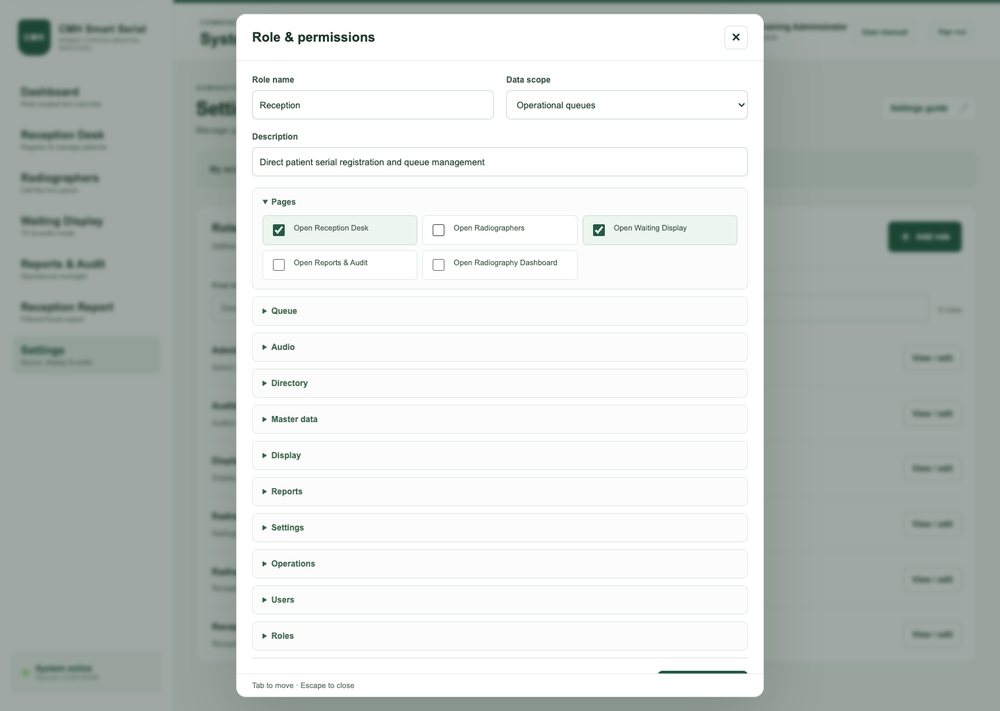
04 / SETTINGS
Configure patient inputs and custom fields
Open Settings → Console settings → Patient input fields. Each built-in field has separate Enabled and Required checkboxes.
| Setting | What reception sees | What happens to saved records |
|---|---|---|
| Enabled, optional | The input is available and can be left blank. | Existing values remain available. |
| Enabled, required | An asterisk marks the input; applicable required values must be supplied before saving. | Older records are not automatically filled. Required values must be provided when editing. |
| Disabled | The input is hidden and the server rejects new values for it. Required is turned off. | Existing values are retained, including when editing other patient details. |
Name remains enabled and required. Classification fields are required only when relevant: for example, sponsor rank applies to a military family patient. Select Save field settings to apply your changes.
Add an entirely new input
- Under Custom fields, enter a New field label, for example Referral clinic.
- Select Text, Number, Date or Dropdown. For a dropdown, enter one choice per line.
- Select Add custom field. Set Enabled and Required for the new draft row.
- Select Save field settings. Reception sees the field the next time the registration form loads.
Labels and dropdown choices can be edited later. Saved field identities and types stay fixed to protect existing values. Disable a field to retire it. You can configure up to 50 custom fields with up to 100 choices in each dropdown.
Custom values appear in patient details and the reception Excel export, including historical values of disabled fields. They do not automatically become MRI summary categories or change the fixed summary report columns.
How are new fields stored?
Definitions are stored in database settings and each registration’s values are stored in a PostgreSQL JSONB column. The installation migration creates that column once. Adding further custom fields does not require new database columns or another migration. Normal PostgreSQL backups include both definitions and values.
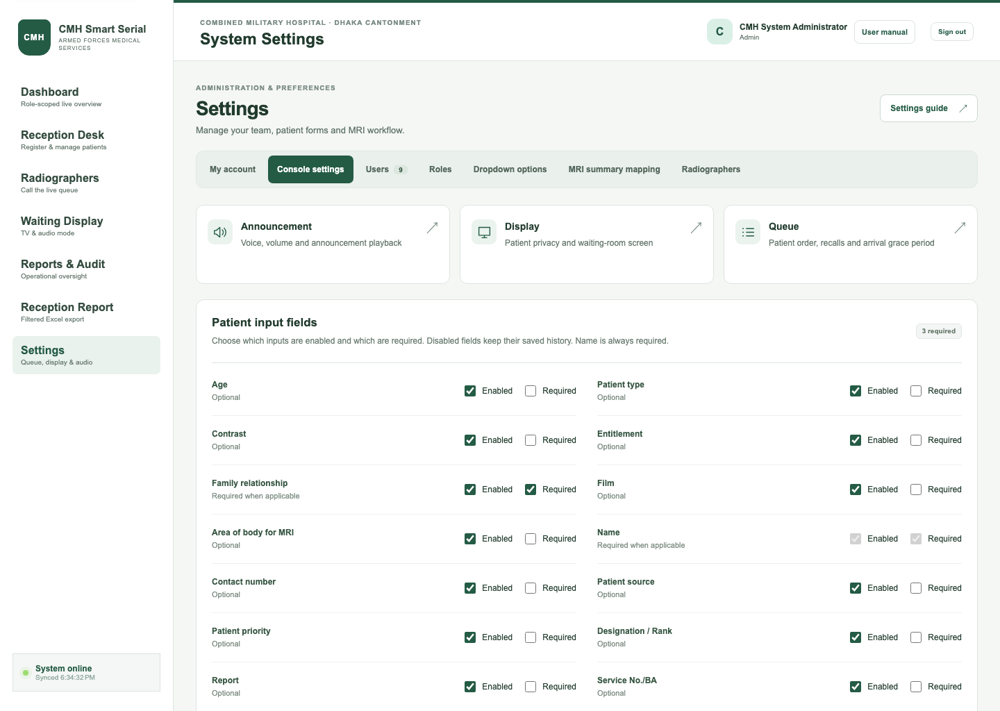
Choose a dropdown category, then use Find option and the Status filter to locate values. Rows show their active status and configured report meaning.
05 / SETTINGS
Add, rename and disable dropdown options
- Open Settings → Dropdown options.
- Select the dropdown category, such as Designation / Rank, Patient type, Entitlement, Service status or Room numbers.
- Select Add option and enter the display label. You may supply an option key or let the app generate it. Set the display order.
- For a rank, select its Monthly report rank group. For patient type, entitlement or service status, select its Monthly report meaning.
- Select Save option.
Use Edit to rename an option or change its order and report meaning. Use Disable to remove it from active choices; use Enable to bring it back. The GUI uses disabling rather than permanent deletion, so existing records can retain their saved values.
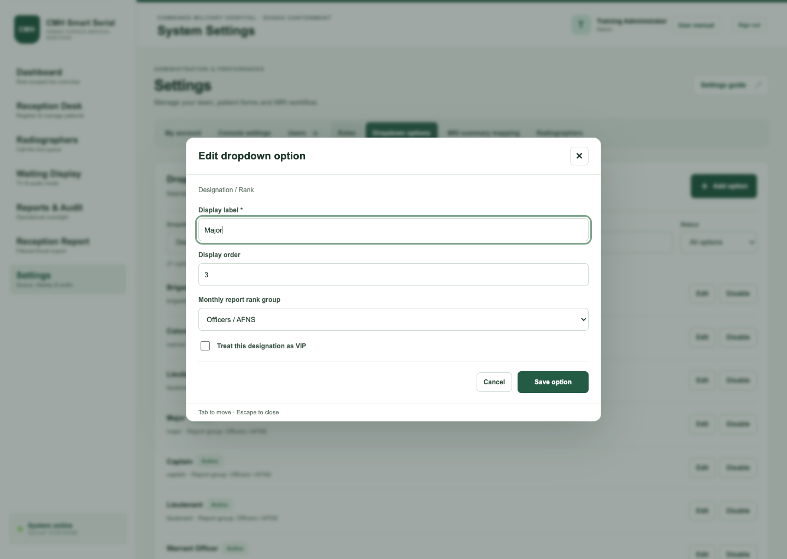
06 / SETTINGS
Decide how MRI summary categories are calculated
Open Settings → MRI summary mapping. These rules turn patient classification details into one of the fixed MRI report columns. They are used for new registrations and when staff explicitly calculate a classification from patient details.
- Start with Show rules → Group and entitlement rules. Choose the report column for each entitlement or military rank group.
- Use Individual rank overrides only when a particular rank needs a different result from its group. Leave Use group rule (no override) selected for normal inheritance.
- Use Find mapping to search within the selected rule type. Choose All rules to search both groups and ranks.
- Review the unsaved-change count and select Save mappings.
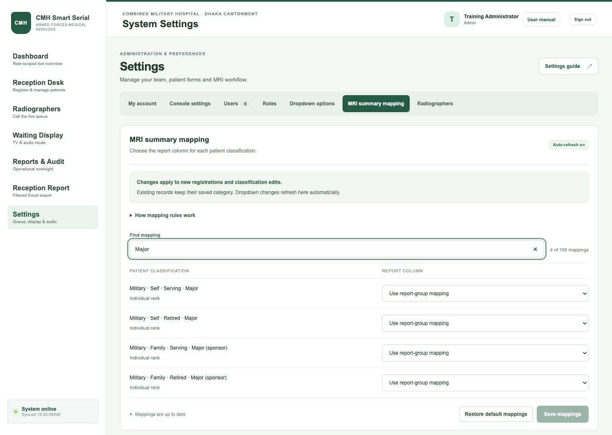
Understand the dropdown choices
| Choice | Result |
|---|---|
| A named report column | Matching patients are counted in that MRI summary column. |
| Use group rule (no override) | An individual rank uses the result configured for its report group. A specific rank choice takes priority over the group. |
| Needs review | The patient stays in the total but has no assigned report category. Staff can review and classify the record later. |
Which details select the rule?
- Military Self: use the patient’s rank and service status.
- Military Family: use the sponsor’s rank and service status. Family relationships share the corresponding family rule.
- Civil entitled: Self and Family use separate rules.
- RE / CNE: use the entitlement rule.
- Room, radiographer, contact number, MRI area and custom fields do not select the summary category.
| Example using the default rules | Expected report column |
|---|---|
| Self + Military + Serving + patient rank Major | Serving · Officers / AFNS |
| Family + Military + Serving + sponsor rank Major + Spouse | Family · Officers |
| Self + Civil entitled | Serving · Civil entitled |
These examples assume the default rank groups and mappings. Set each rank’s Monthly report rank group under Dropdown options → Designation / Rank. Patient type, entitlement and service status options need the correct Monthly report meaning.
Changes, refresh and restore defaults
The editor refreshes automatically when dropdowns change. Added ranks appear, renamed labels update, and disabled values leave the active rule list. Unsaved edits on remaining rows are preserved. If the choices change during a save, review the refreshed rules and save again.
Restore default mappings resets every rule in the draft, including rules hidden by the current filter. It does not save immediately; select Save mappings to apply the reset.
07 / SETTINGS
Maintain radiographers and rooms
- Open Settings → Radiographers.
- To add someone, select Add radiographer. Enter the name, department and room, select a waiting area, then save.
- To change an existing entry, select Edit name & room, update either field, and select Save radiographer.
- Assign the appropriate login under Settings → Users → Edit assignment.
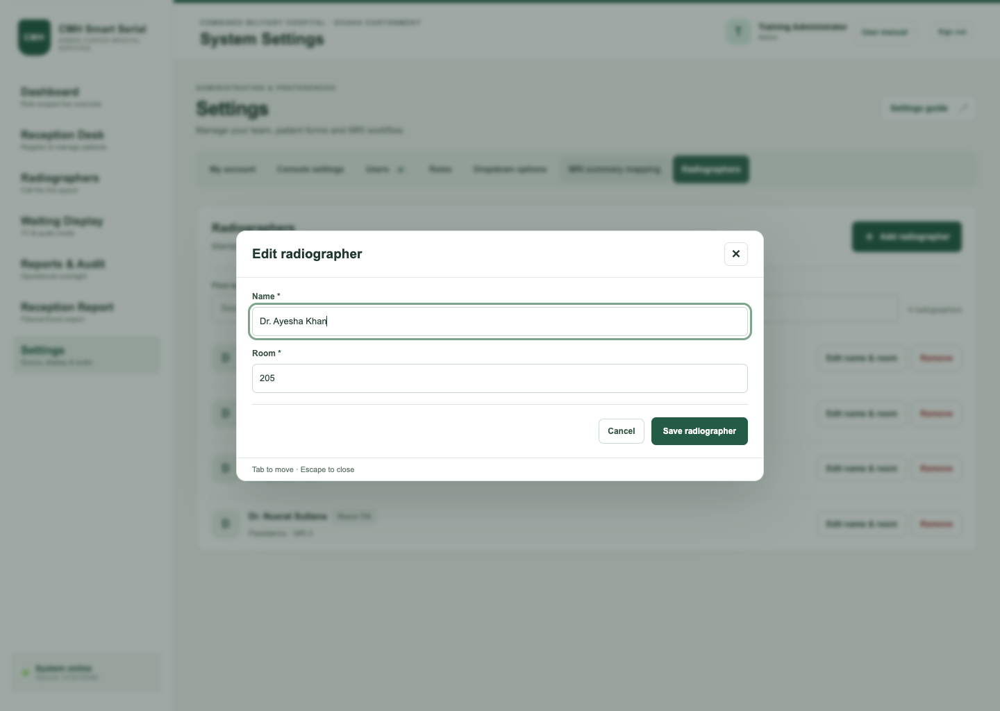
The Radiographer rooms section under Console settings also offers Change room using configured room options. Add room choices under Dropdown options → Room numbers. A patient is assigned to the calling radiographer and configured room when called from the shared waiting list.
Remove takes a radiographer out of the active directory while preserving historical records. First reassign or disable linked active accounts, resolve active patients, and reschedule or cancel pending appointments if the app reports these blockers.
08 / SETTINGS
Configure the queue, display and announcements
Open Settings → Console settings, select a setting card, make your changes and select its Save button.
| Card | What to configure |
|---|---|
| Queue | Ordering policy (priority then serial, or serial only), recall limit and late grace minutes. |
| Display | Patient-name privacy, the number of upcoming tokens and the footer notice. |
| Announcement | Voice source, cached-audio limit, repetition, speech rate and volume. Use the test action to check the sound. |
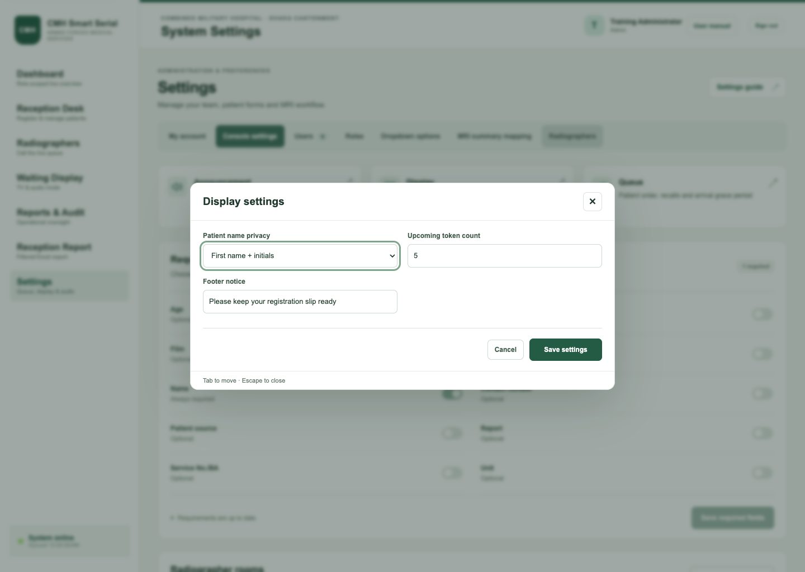
Other console sections include Consoles & displays, Holidays and the SMS outbox, depending on permissions. When registering a device, give it a descriptive name, choose its type and waiting room, and retain the client key shown after registration for device setup.
What is “mri_rank_mapping_initialized”?
It is an internal marker recording that the initial MRI rank defaults have already been applied. It prevents later startup seeding from overwriting administrator edits. It is not a setting to change and is hidden from the settings screen.
Announcement language and Bengali names
Open Settings → Console settings → Announcement. Set Announcements to Off, Bangla only, English only, or Both — Bangla then English, then save. Off clears waiting audio; a clip already playing may finish. Calling patients and updating the display still work. Choose an enabled mode and save before testing the voice.
In Reception’s Add patient or Edit waiting patient form, use Name in Bengali for announcements. Leaving the original name field suggests a spelling automatically; Suggest Bengali spelling replaces the current spelling. Suggestions work offline and may misinterpret names or abbreviations. Check and correct them before saving. The saved Bengali name is used throughout one Bengali voice clip. The original name and English announcement are unchanged. If the field is blank, an automatic suggestion is used when called. Names are announced with or without a service number.
09 / DAILY WORK
Register and serve patients
- Reception opens Reception Desk → Add patient.
- Complete the patient details and all fields marked with an asterisk, including Contact number if your administrator requires it.
- Choose patient type, entitlement and classification inputs. For military family patients, select the sponsor’s service status and rank and the family relationship.
- Optionally select Room / radiographer, then select Save patient. The registration receives an annual serial. Leave the assignment blank to allow any radiographer to call or assign the patient. Reception can also use Assign room / radiographer on an unassigned waiting patient.
- Radiographers can use Assign room / radiographer or Reassign in their patient list. Choose a destination and enter a reason. After assignment, only the assigned radiographer or a radiographer in that room can call or reassign the patient. Reception cannot override an existing assignment. Reassignment is available while waiting or skipped. Call next patient skips patients assigned to other rooms.
- Use the available start, complete, recall or other queue actions as the patient progresses. VIP patients use the physical-call workflow where offered.
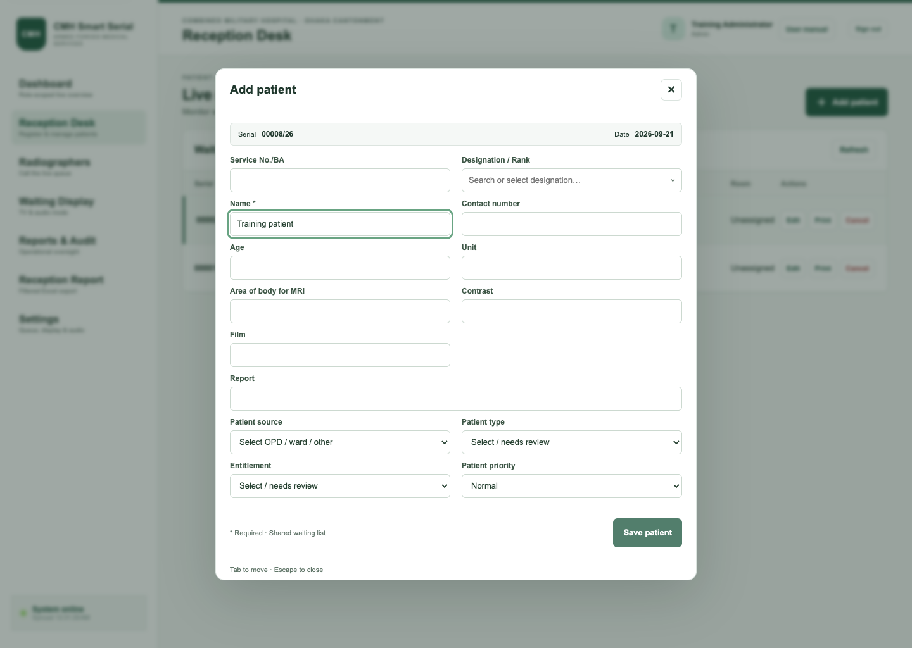
Search and select a rank in one field
- Click Designation / Rank, Sponsor rank or the classification editor’s Patient rank field to open the options.
- Type part of the label or option key to filter the list.
- Click an option, or use the Up/Down arrows and press Enter to select it. The same input displays the selected label.
- To choose a different rank, replace the text and select a new match. Unselected search text is not saved as a rank. Escape closes the list; Tab leaves the field.
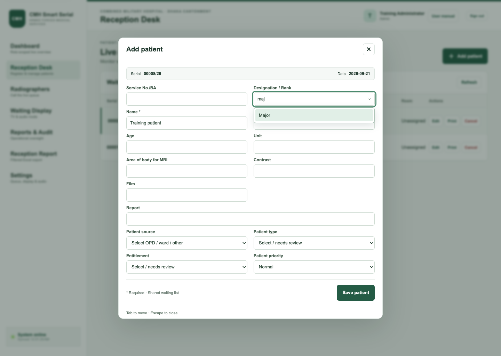
Reception can edit waiting-patient details before the patient is called. The system prevents unsupported edits after the patient enters service.
10 / REPORTS
Review MRI summaries and correct classifications
- Open Reception Report → MRI summary.
- Open Date range / counting basis and choose your date range.
- Use Registration date for all registrations, including cancelled ones, or Completed MRI date for completed records by completion date in Bangladesh time.
- Select a count to open its patient list. Each registration contributes once to the selected basis.
- Select Classify or Edit classification beside the patient. You can also open Patient details → Edit classification.
- Export PDF or Excel after applying the desired report filters.
Needs review remains part of the total. It means no category was resolved, the mapping deliberately chooses Needs review, or staff directly marked the patient for review.
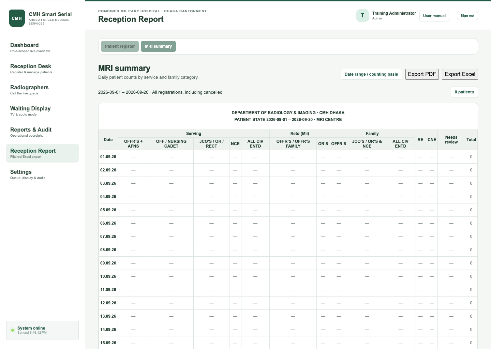
Choose a report category directly
- In Report classification, confirm the patient name, serial and current report category.
- Leave Choose report category selected.
- Select the final Report category, or select Needs review — leave unclassified.
- Select Save classification.
This route does not require patient type, entitlement, service status, rank or family details. It changes only the report category and leaves saved patient inputs unchanged. The record shows Chosen directly. The choice is retained through ordinary patient edits and mapping changes. The system records who changed it and the before/after category in the audit log.
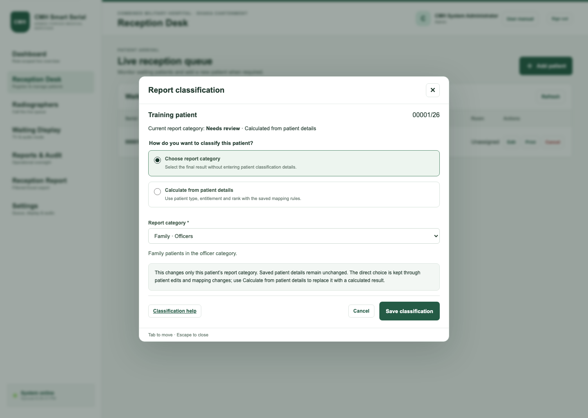
Calculate from patient details instead
- Select Calculate from patient details.
- Choose Patient type and Entitlement. For Military, choose Serving or Retired. For Self use Patient rank; for Family use the sponsor’s rank and family relationship where applicable.
- Complete fields marked with an asterisk and choose an actual listed rank rather than leaving unselected search text.
- Select Save classification to apply the current mapping rules. This replaces a previous direct choice with a calculated result.
Incomplete optional inputs can leave the result as Needs review. A configured rule may also intentionally send the combination to Needs review.
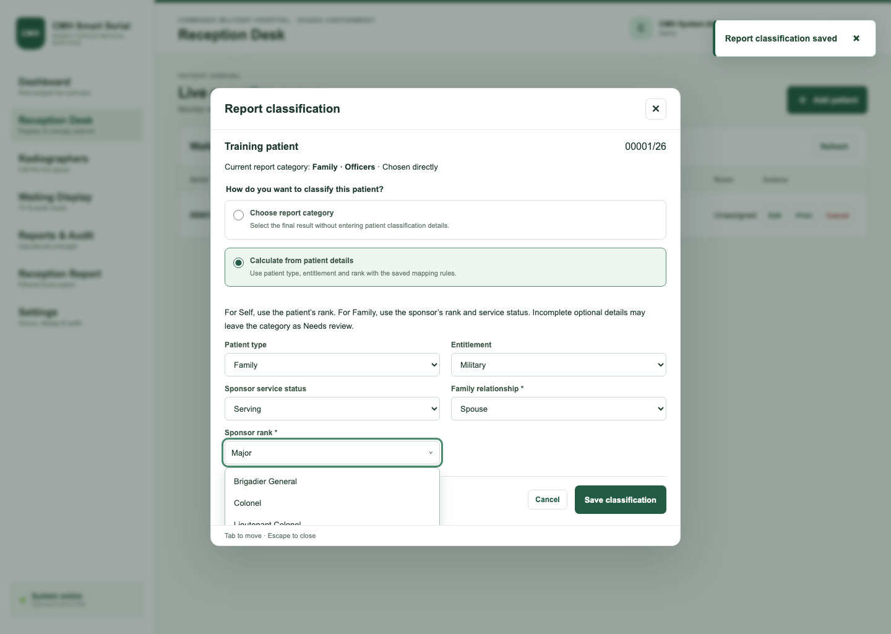
Disabled inputs or loading problems
Disabled classification fields cannot accept input. Their saved values are listed in the dialog with an explanation. Choose a report category directly, or ask an administrator to enable the fields under Settings → Console settings → Patient input fields.
The dialog shows a loading message while fetching choices. On failure, read the error and select Retry loading choices. If an application update was just installed, restart the server and refresh the page. Missing active dropdown choices are also explained; an administrator can enable them under Dropdown options. Both classification routes require the patient-registration permission.
11 / QUICK HELP
Common questions
- A Settings tab or action is missing.
- Ask an administrator to review your role’s page and action permissions. Assigned-radiographer roles also need the correct directory assignment.
- A new dropdown value is missing from MRI mappings.
- Confirm it is active and belongs to a classification dropdown. Set Monthly report meaning for patient type, entitlement and service status. Rank rows also require active Military, patient-type and service-status options. Room numbers and other unrelated dropdowns do not create MRI category rules.
- A mapping change did not change an old report.
- Old registrations retain their saved categories. Open Report classification and choose Calculate from patient details to apply the current rules. Directly chosen categories remain fixed until explicitly replaced.
- The classification form has no editable patient fields.
- The fields may be disabled, or choices may have failed to load. Read the dialog notice, retry loading if offered, or use Choose report category to select a result directly.
- Save patient is unavailable.
- Read the form’s “Required or invalid” message. Complete the required fields and correct invalid numbers. Supply any enabled classification fields marked as required. Disabled inputs accept no new values.
- A radiographer cannot be removed.
- Resolve the linked active accounts, active patients or pending appointments identified in the error, then try again.
- A user still cannot sign in after a reset.
- Check that the account is active and the username and latest temporary password are correct. Old passwords and old sessions stop working after a reset.
- The screen says connection interrupted.
- Check the wired network and that the server application is running. Refresh after connectivity returns. If a save was interrupted, check whether the record exists before submitting it again.